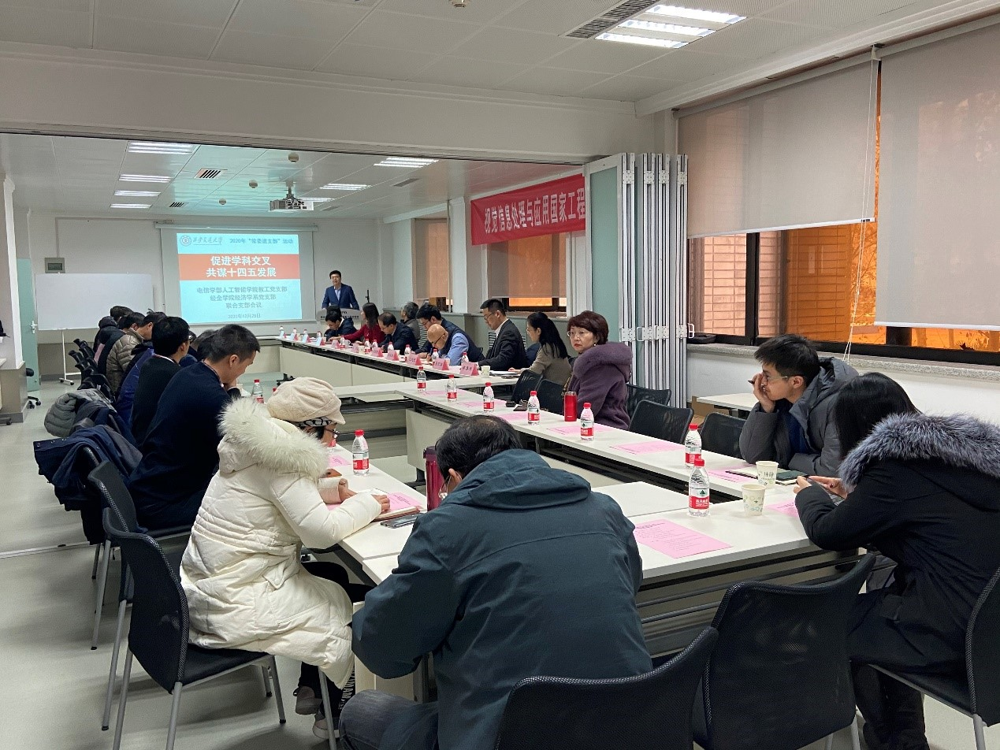
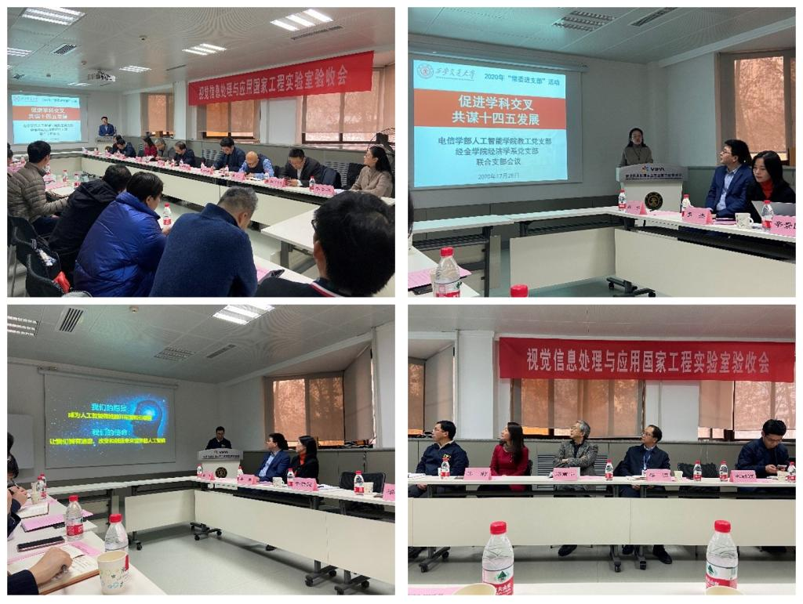
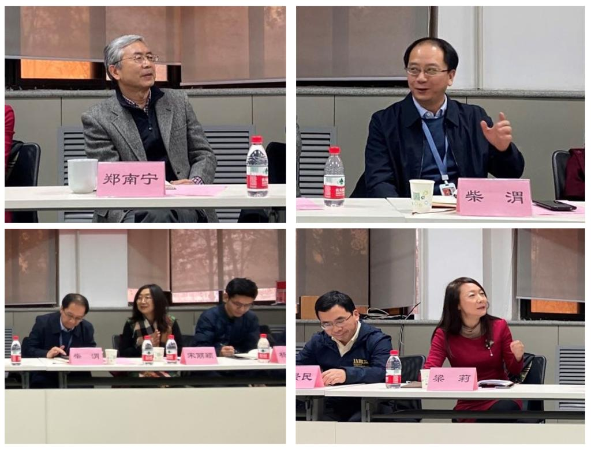
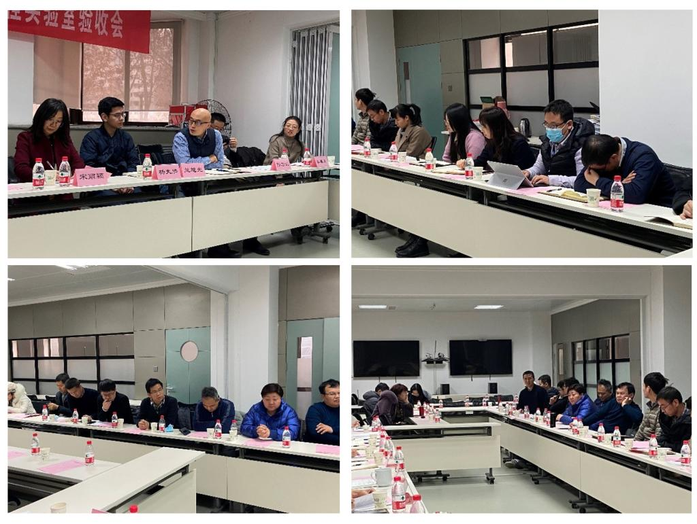
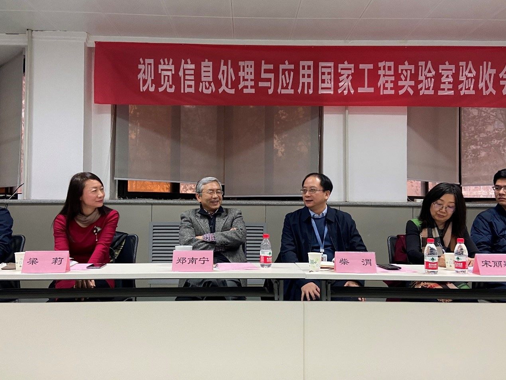

2020年12月28日下午，电信学部人工智能学院教工党支部与经金学院经济学系党支部在兴庆校区科学馆315会议室举办了“促进学科交叉、共谋十四五发展”主题联合支部会议。校党委常委、组织部部长柴渭、郑南宁教授、电信学部党委书记梁莉、经金学院党委书记宋丽颖、人工智能学院常务副院长辛景民、人工智能学院党总支书记兰旭光以及人工智能学院和经金学院经济学系教工党员参加了此次联合支部会议。会议由人工智能学院教工党支部书记魏平和经金学院经济学系党支部书记李春米共同主持。

魏平结合五中全会精神，说明了本次会议的主题和意义，并介绍了人工智能学院教工党支部的历史、概括、活动等基本情况，李春米介绍了经济学系党支部的情况和经济学系的学科建设、十四五规划等，辛景民介绍了人工智能学院的学科建设和十四五规划进展情况。通过介绍，与会党员对本次会议的意义有了更近一步的认识，对双方支部和学科情况也都有了更深入的了解。

听完几位负责人的介绍后，与会教工党员结合五中全会精神、围绕科技经济学科交叉和十四五规划展开了热烈的讨论。人工智能学院郑南宁、兰旭光、孙宏滨、任鹏举、王芳芳、经金学院经济学系的戴小勇、聂鹏、程瑜等党员做了发言。郑南宁教授指出，人工智能和经济学对社会的发展进步都至关重要，要通过学科交叉寻找突破点，通过深入交流使得双方学科都取得发展。郑教授建议，不仅要建立教工之间稳定的沟通渠道，也应该积极组织博士生、硕士生开展学术交流活动。其他老师针对学科融合的方向方式、青年教师的发展、离退休教职工的关怀、民生生活等问题展开了讨论和交流。
经金学院宋丽颖书记表示，希望以此次联合支部活动为契机，能促进两个学院进一步的合作与交流，使得人工智能和经济学碰撞出新的火花。电信学部梁莉书记指出，实现深入有效的学科交叉，一方面需要建立长期有效的沟通机制，另一方面要注重科学伦理与规范的研究，并可以通过设立创新基金等方式将学科交叉产生的学术想法落到实地。


柴渭常委听取了党员们的汇报和讨论后做了重要讲话。他充分肯定了两个党支部开展的工作，他指出实现成功的学科交叉两个支部必须要发挥主动性和积极性，既要加强教师的长期交流也要加强学生的互动与交流。柴渭党委强调，基层党支部要将党建工作和学科建设工作紧密结合，既要做思想文化建设的桥头堡，也要做学科发展建设的领头羊。党支部后续应重点开展三个方面的工作。第一，要开展好学习活动，加强对党中央政策、总书记讲话、党的理论的学习；其次，要开展自我诊断与自我检视行动，建立具有强大凝聚力的党支部，避免支部组织软弱涣散；最后，要构建更高质量的党员发展体系，壮大支部党员队伍。柴渭常委并向大家介绍了学校的发展规划。他希望两个支部要多措并举，把工作做实做细，用优异成绩迎接建党100周年。

“常委进支部”活动是我校党委常委联系基层师生党员的一项重要制度安排，自2015年以来已开展600余次，取得了良好的效果。本次活动的开展，既加强了两个支部党员的联系与交流，也为后续学科交叉和融合创造了条件，同时让党员们深入了解了学校的发展规划，坚定了工作和发展的方向，取得了良好的会议效果。